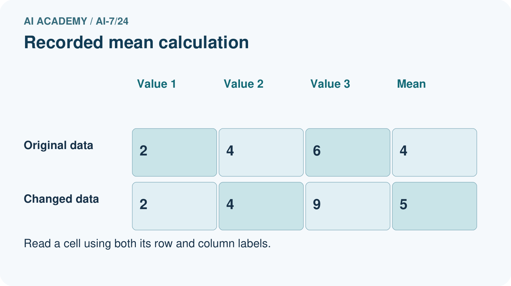
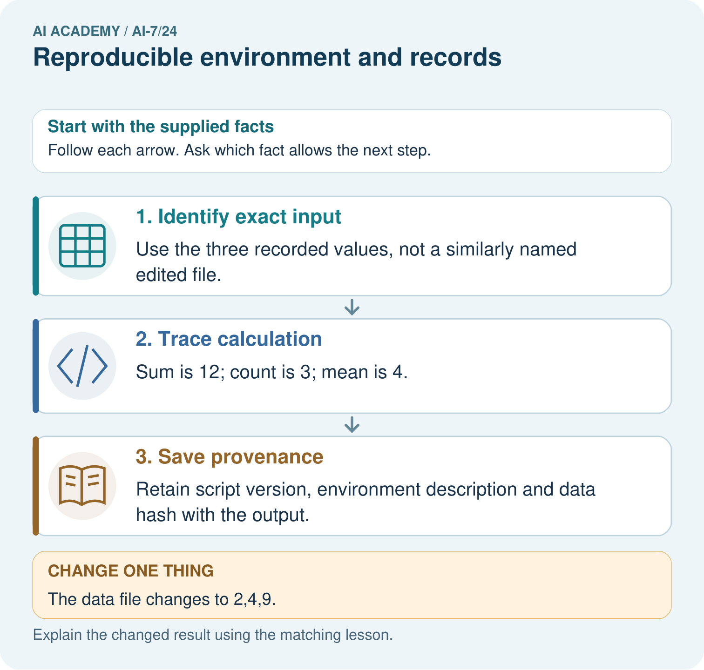
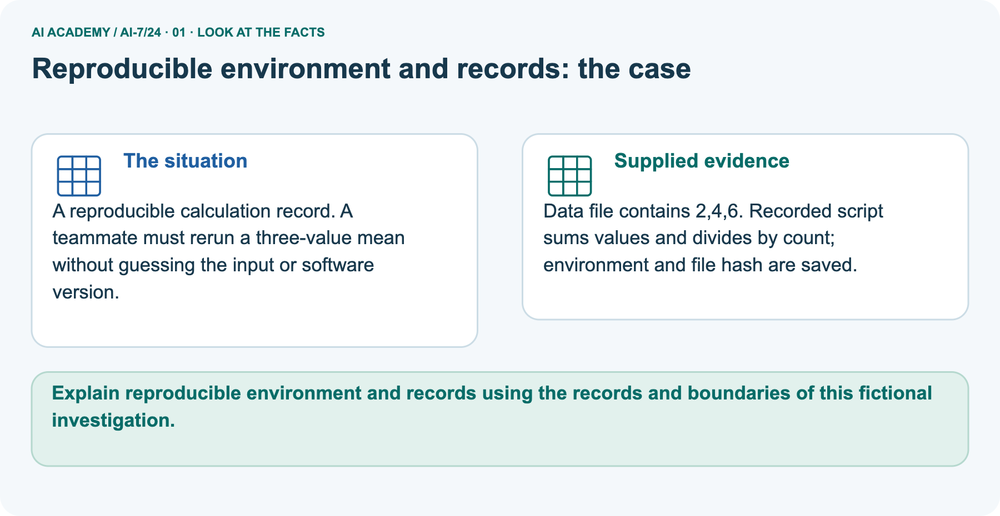
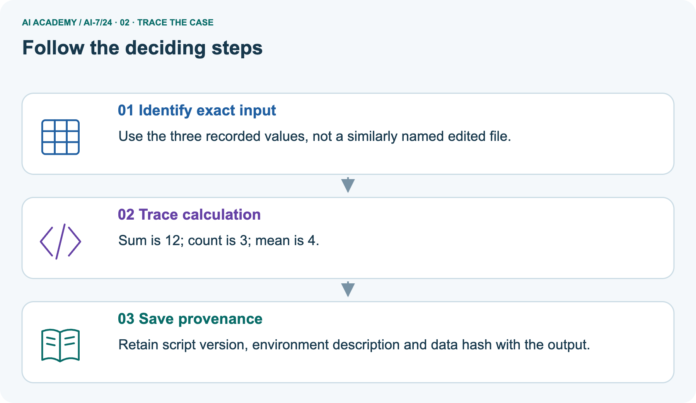
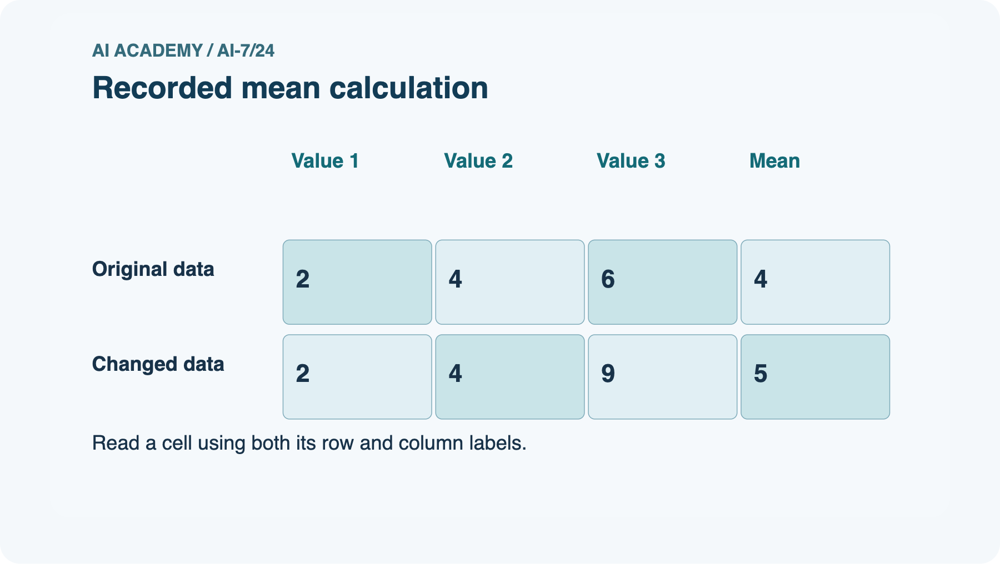
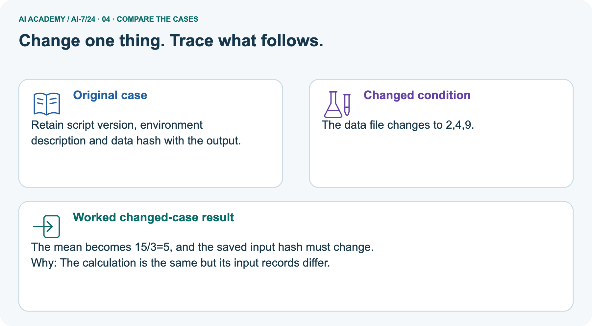
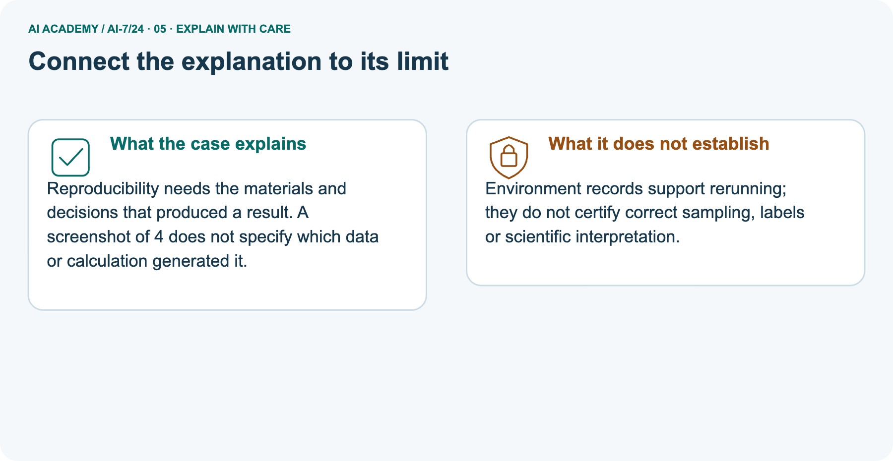
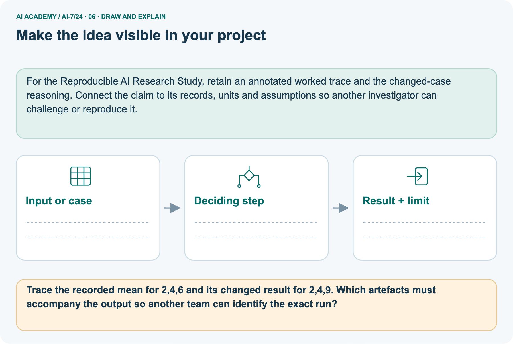

AI Academy · Level 7 · Grade 12 · Week 24 · Student lesson
Reproducible environment and records
Learn to understand, design, build, test and explain AI systems responsibly.
Project: Reproducible AI Research Study
Before you start
Recall Power and resource tradeoffs. Explain why a recorded result needs its input conditions and evidence source before it can support a claim.
Plan time to read, investigate and explain. Keep predictions separate from observations.
Student lesson · 1 of 18
Your mission
Start with the target: Explain the mechanism and terminology of reproducible environment and records. Try the recall before opening notes.
Your learning target
I can explain the mechanism and terminology of reproducible environment and records.
I can apply the stated procedure to a new case with a traceable result.
I can identify an assumption or limitation and design a revealing follow-up.
Remember before reading
Close your notes first. A rough first answer helps us choose the right starting point; it is not a score for your ability.
Without opening the old lesson, explain one key idea from Power and resource tradeoffs. Give an example and a mistake that the idea helps you avoid.
Without opening the old lesson, explain one key idea from Predefining an analysis plan. Give an example and a mistake that the idea helps you avoid.
Without opening the old lesson, explain one key idea from Dataset and benchmark limitations. Give an example and a mistake that the idea helps you avoid.
After trying, check the relevant lesson or ask your teacher. Change the part of your explanation that the evidence shows was wrong.
This week you will practise:
Explain the mechanism and terminology of reproducible environment and records
Apply the stated procedure to a new case with a traceable result
Identify an assumption or limitation and design a revealing follow-up
Retrieve what you already know
Recall Power and resource tradeoffs. Explain why a recorded result needs its input conditions and evidence source before it can support a claim.
This week’s end goal
Explain reproducible environment and records using the records and boundaries of this fictional investigation.
Student lesson · 2 of 18
Notice the evidence
Investigate the supplied Reproducible environment and records case. Separate observations, given facts and assumptions before choosing an explanation.
A reproducible environment record links code, data, configuration and runtime dependencies to results. A seed alone is insufficient.
Begin by writing the question the procedure is intended to answer. Identify the information already supplied, the information it will produce and the information still missing.
These are constructed classroom examples; they do not require live accounts, private records or an external service. Do not treat a plausible explanation as a measured outcome.
Student lesson · 3 of 18
See how it works
Follow the mechanism for Reproducible environment and records. Connect each labelled input, deciding step and result.
Record exact data IDs/splits, code version, dependency versions, parameters, randomness policy and raw outputs. Verify hashes for integrity without treating them as correctness proofs.
Reproducible environment and records — evidence trace
Before applying the procedure, write its units, denominator or decision boundary where relevant. A partner should be able to repeat each step using the same inputs.
If a required input is absent or violates the stated contract, record that condition explicitly instead of quietly replacing it with a convenient value.
Connect the picture and the explanation
Point to the input, the deciding step and the result in this week’s visual. Explain the same step in ordinary words. A picture helps when you can say what each part represents.
Student lesson · 4 of 18
Compare the cases
Compare the supplied cases for Reproducible environment and records. Identify the detail that changes the conclusion.
Compare a familiar case with a changed case
Folder contains seed42 and final-score.txt, but no dataset, code or dependency record. Show the intermediate steps and give the conclusion with its scope.
Change one thing in the pictured case
Change one thing
Change: The data file changes to 2,4,9.
Predicted result
Prediction: The mean becomes 15/3=5, and the saved input hash must change.
Why the result follows
Reason: The calculation is the same but its input records differ.
Student lesson · 5 of 18
Words that unlock the idea
Use the vocabulary of Reproducible environment and records to explain a concrete decision, rather than only memorising definitions.
| Word | Meaning |
|---|---|
| Environment manifest | Runtime and dependency records |
| Artifact hash | A digest for comparing exact content |
| Run identity | A versioned link between settings and outputs |
Student lesson · 6 of 18
Follow a worked example
Follow the worked trace for Reproducible environment and records, predict a step, then compare with its explanation.
Folder contains seed42 and final-score.txt, but no dataset, code or dependency record.
Replay cannot be established. Supply artifacts/versions and exact metric/settings; seed42 alone cannot reconstruct the experiment.
Worked explanation · Reproducible environment and records
Compare the intermediate evidence with the final statement. Explain why each number or decision follows from the stated inputs.
The conclusion belongs to this scenario and procedure; changing the inputs, evaluation population or authority can change what it establishes. Retain the raw record so a later revision can be compared honestly.
Learn from the worked case
Cover the result before checking it. Say what is given, choose the procedure, and follow one step at a time. Then uncover the result and explain your first mismatch. Ask why a step is allowed, not only what number it produces.
A pictorial worked case: Reproducible environment and records
A reproducible calculation record. A teammate must rerun a three-value mean without guessing the input or software version.
The facts we will use
Supplied facts
Data file contains 2,4,6. Recorded script sums values and divides by count; environment and file hash are saved.


Read the picture one step at a time
Why this result follows
Why the result follows
Reproducibility needs the materials and decisions that produced a result. A screenshot of 4 does not specify which data or calculation generated it.
What this example does not establish
Keep the stated limit
Environment records support rerunning; they do not certify correct sampling, labels or scientific interpretation.
Keep the stated limit
Read the labelled picture: Trace the recorded mean for 2,4,6 and its changed result for 2,4,9. Which artefacts must accompany the output so another team can identify the exact run?
Keep the stated limit
Change one thing: The data file changes to 2,4,9. Predict the result before checking the explanation. What remains the same?
Student lesson · 7 of 18
Find and repair a mistake
Find the unsupported step in the Reproducible environment and records claim and explain a repair using the supplied evidence.
Reproducibility supports checking the computation, not automatic validity of the research claim.
Check the claim against the facts
A useful check asks what would make the reasoning fail. Distinguish a failure to execute the declared procedure from a weakness in the procedure itself.
The first may require a correction; the second requires an explicitly revised method and new evidence. Preserve unsuccessful cases so an improved result cannot hide the original problem.
Locate the earliest unsupported step
A report omits this qualification: Reproducibility supports checking the computation, not automatic validity of the research claim.
Explain how omitting it could change a reader's interpretation, and write an accurate replacement.
Student lesson · 8 of 18
Practise together
Practise Reproducible environment and records with support, then explain the deciding step in your own words.
Explain the weekly mechanism in your own words. Use the worked scenario to name its input, decision rule and output.
Practise with less help: Trace the worked case
Use workbook W2 for the connected example “Reproducible environment and records”. First fill the input and rule boxes. Try the middle steps before asking for a hint. After a hint, try the next step yourself.
| Plan | Do | Check |
|---|---|---|
| What is given? Which rule or procedure applies? | Record each intermediate step. | Does the result follow? What remains unknown? |
Explain your trace to a partner. Your partner points to one step to check. Swap roles on the next case. Each person writes their own explanation.
Check your reasoning
Use the worked case for Reproducible environment and records. Proposed explanation: “The worked result establishes every future case”. Decide whether this explanation is supported.
Point to the step or supplied fact that decides; explain your repair if needed.
Answer on your own before discussion. If you are unsure, say which step you need help with.
Explain the picture
Trace the recorded mean for 2,4,6 and its changed result for 2,4,9. Which artefacts must accompany the output so another team can identify the exact run?
This is supported practice. Keep the separately named independent case for an attempt before feedback.
Student lesson · 9 of 18
Run the investigation
Investigate Reproducible environment and records. Record the prediction, actual observation or labelled paper trace, explanation and next test separately.
Predict, investigate and preserve the evidence
Folder contains seed42 and final-score.txt, but no dataset, code or dependency record. Show the intermediate steps and give the conclusion with its scope.
| Record | Your evidence |
|---|---|
| Given input and fixed rule | |
| Prediction before checking | |
| Actual result, or “not run” | |
| First mismatch and one explanation | |
| Boundary or missing input and expected response |
On paper, trace the supplied procedure. If code is provided, predict before running it in a local practice file. Never write an expected answer as though it were an observed run.
Plan → try → check
Before trying: what do I expect, and why? While trying: which step could first go wrong? Afterwards: what did I actually observe, and what should change? Keep “not run” if you only traced the procedure.
Student lesson · 10 of 18
Build your understanding
Move from recall to tracing, diagnosis and transfer in Reproducible environment and records. Explain why each step is justified.
Explain → apply → challenge
Explain the weekly mechanism in your own words. Use the worked scenario to name its input, decision rule and output.
A report omits this qualification: Reproducibility supports checking the computation, not automatic validity of the research claim.
Explain how omitting it could change a reader's interpretation, and write an accurate replacement.
For the worked scenario, propose one additional case that could reveal a failure, describe its expected outcome before running it, and explain what would need to remain fixed for a fair comparison.
Do not reuse W4 as a new final test after receiving feedback.
Student lesson · 11 of 18
Connect your project
Apply this week’s idea to Reproducible AI Research Study. Keep an annotated decision and the evidence supporting it.
Add a labelled reproducible environment and records evidence sheet to Reproducible AI Research Study. Show how you can explain the mechanism and terminology of reproducible environment and records.
Use the supplied fictional case and keep its inputs, intermediate steps, calculation or prediction, and limitation. Connect this record to last week’s record; a matching answer without a trace is insufficient.
| Project evidence | Record |
|---|---|
| Component and version | |
| Inputs permitted at prediction time | |
| Trace and comparison with earlier work | |
| Failure, limit and human review |
Evidence for your project
For the Reproducible AI Research Study, retain an annotated worked trace and the changed-case reasoning. Connect the claim to its records, units and assumptions so another investigator can challenge or reproduce it.
Student lesson · 12 of 18
Show what you know
Use a genuinely new case for independent evidence. Previously discussed examples remain practice; use the separately named independent case before feedback.
Complete the supported workbook tasks before attempting W4 independently. Record any hints or help used. After feedback, use the teacher's fresh retry rather than copying the earlier answer.
For a project, select a relevant new case, predict the outcome from the declared rule and preserve the result alongside any revision.
For the worked scenario, propose one additional case that could reveal a failure, describe its expected outcome before running it, and explain what would need to remain fixed for a fair comparison.
Do not reuse W4 as a new final test after receiving feedback.
Student lesson · 13 of 18
Study a complete case
Revisit the complete Reproducible environment and records case for supported practice. Repeated examples do not become fresh assessments.
Complete evidence record
Reproducible environment and records — evidence trace
Follow the input through the stated procedure to its result. Cover the result first, predict it, then explain every intermediate step. The text/table accompanies the figure so the example can be read without colour.
Student lesson · 14 of 18
Try a new case independently
Attempt the reserved new case before feedback. Record support; the earlier examples below remain additional practice.
Independent case: Apply a new case independently
Partner changes preprocessing and data version while keeping old run ID. What must be preserved?
Attempt this case before feedback. Record any help. Earlier examples below are further practice; a case already practised with feedback cannot establish fresh transfer.
Attempt this without hints
Partner changes preprocessing and data version while keeping old run ID. What must be preserved?
Record support used: none, hint or teacher explanation. After feedback, a different case is needed to demonstrate independence.
Use feedback to improve
Attempt the independent case before hints. Record whether you worked alone, used a hint or followed a model. After feedback, fix the first unsupported step and explain why it changed.
A later check uses a changed case, not a copied answer.
Student lesson · 15 of 18
Your lesson route
Use this map to navigate Reproducible environment and records, connect the goals to tasks and keep one evidence record for each attempt.
Start with this question: A reproducible calculation record. A teammate must rerun a three-value mean without guessing the input or software version.
| By the end, I can | How I will show it |
|---|---|
| Explain the mechanism and terminology of reproducible environment and records | Explain the deciding step, show a trace or test, and state one limit. |
| Apply the stated procedure to a new case with a traceable result | Explain the deciding step, show a trace or test, and state one limit. |
| Identify an assumption or limitation and design a revealing follow-up | Explain the deciding step, show a trace or test, and state one limit. |
Remember → watch and explain → try with help → investigate → try independently → keep project evidence. Your teacher may spread this lesson across several classes.
Keep your first prediction. Compare it with what the evidence shows and explain any change.
Student lesson · 16 of 18
Finish and return
Explain Reproducible environment and records without notes, identify a remaining question and plan a later check with a changed case.
Close your notes. Explain this goal in your own words: Explain the mechanism and terminology of reproducible environment and records
If you are unsure, return to the worked picture and explain one arrow. If you are ready, change an input or assumption and justify your prediction.
Save your workbook evidence. At the next review, try a different case before opening your old answer.
Student lesson · 17 of 18
Supported practice, repair and portfolio
Attempt supported questions before using hints or feedback. Review a missing building block, then keep the completed work.
Use this supported practice once, in the browser or on paper. Keep the reserved independent assessment for a separate first attempt before teacher feedback.
A reproducible calculation record. A teammate must rerun a three-value mean without guessing the input or software version.
Practice 1: explain the deciding evidence
Which labelled step matches this detail? Retain script version, environment description and data hash with the output.
1. Trace calculation
2. Identify exact input
3. Save provenance
Hint · try first
Hint if needed: Read the steps in the pictorial case. Match the supplied detail to the stage that performs or records it.
Feedback · compare after trying
After your attempt, compare with the supported explanation: Save provenance Retain script version, environment description and data hash with the output.
Reproducibility needs the materials and decisions that produced a result. A screenshot of 4 does not specify which data or calculation generated it.
Practice 2: explain the deciding evidence
Changed case · predict first
Changed-case practice: The data file changes to 2,4,9. Which conclusion is supported by the supplied facts?
1. The mean becomes 15/3=5, and the saved input hash must change.
2. We can decide the result without examining the changed input or the procedure.
3. This one example guarantees correct results for every future input.
Hint · try first
Hint if needed: Use the changed condition and the deciding step in the pictorial trace. The answer must say what follows from those facts.
Feedback · compare after trying
After your attempt, compare with the supported explanation: The mean becomes 15/3=5, and the saved input hash must change. The calculation is the same but its input records differ.
Repair a missing building block
Review Power and resource tradeoffs (ai-7/23). Goal: Explain the mechanism and terminology of power and resource tradeoffs. Short practice: Calculate both simulated detection fractions and resource costs.
What additional detection is observed for the extra forty units, and does that establish power for an actual classroom study?. Return to this week and explain what you changed.
Review Predefining an analysis plan (ai-7/21). Goal: Explain the mechanism and terminology of predefining an analysis plan. Short practice: Apply the recorded exclusion rule.
Can two readable model failures be removed, and how must a necessary later plan change be disclosed?. Return to this week and explain what you changed.
Review Dataset and benchmark limitations (ai-7/18). Goal: Explain the mechanism and terminology of dataset and benchmark limitations. Short practice: Report the indoor benchmark with its denominator and missing condition.
After two correct outdoor cases out of four are added, what slice rate is supported and what remains uncertain?. Return to this week and explain what you changed.
Keep your completed work
Use Download completed work in the hosted lesson to export your answers, reflections, practice feedback and code-run evidence. Open the HTML copy to read or print it.
Drafts stay in this browser when storage is available; clear drafts on a shared device.
Student lesson · 18 of 18
Visual concept journey
Explain each Reproducible environment and records graphic using its labels, deciding evidence and relevant limitation.
01. Reproducible environment and records: the case

A reproducible calculation record. A teammate must rerun a three-value mean without guessing the input or software version. Supplied facts: Data file contains 2,4,6.
Recorded script sums values and divides by count; environment and file hash are saved.
Point to the given fact that matters most. Explain why it matters.
02. Follow the deciding steps

Identify exact input: Use the three recorded values, not a similarly named edited file. → Trace calculation: Sum is 12; count is 3; mean is 4. → Save provenance: Retain script version, environment description and data hash with the output.
Point to each numbered stage and explain which recorded input it uses.
03. Recorded mean calculation

Recorded mean calculation. Original data: Value 1 = 2, Value 2 = 4, Value 3 = 6, Mean = 4. Changed data: Value 1 = 2, Value 2 = 4, Value 3 = 9, Mean = 5.
Read the labels and values. Explain the relationship the model shows.
04. Change one thing. Trace what follows.

Original case: Retain script version, environment description and data hash with the output. Changed condition: The data file changes to 2,4,9. Expected result: The mean becomes 15/3=5, and the saved input hash must change.
Reason: The calculation is the same but its input records differ.
Predict before checking the worked changed-case result. Name what changed and what the supplied facts allow you to conclude.
05. Connect the explanation to its limit

Reproducibility needs the materials and decisions that produced a result. A screenshot of 4 does not specify which data or calculation generated it.
Limit: Environment records support rerunning; they do not certify correct sampling, labels or scientific interpretation.
Explain the case, then point to a limit on the claim.
06. Make the idea visible in your project

For the Reproducible AI Research Study, retain an annotated worked trace and the changed-case reasoning. Connect the claim to its records, units and assumptions so another investigator can challenge or reproduce it.
Draw your input, deciding step, result and limit. Supported question: Trace the recorded mean for 2,4,6 and its changed result for 2,4,9. Which artefacts must accompany the output so another team can identify the exact run?
Draw your project trace and justify the deciding step using evidence.